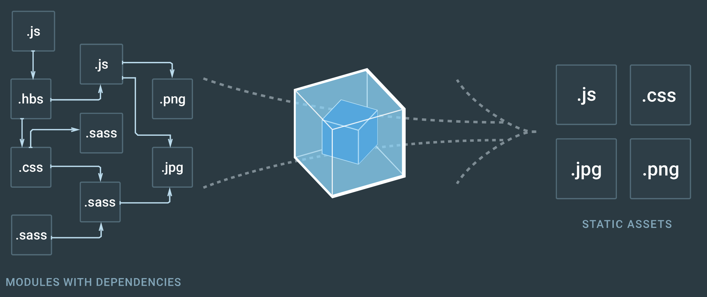
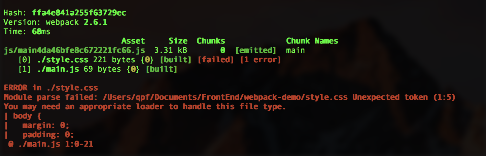
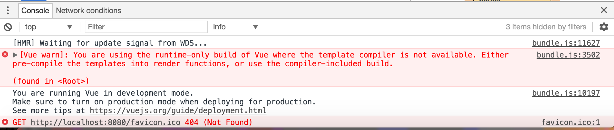

Webpack的官网上有这么简单的一段话介绍它的功能：
webpack is a module bundler for modern JavaScript applications. When webpack processes your application, it recursively builds a dependency graph that includes every module your application needs, then packages all of those modules into a small number of bundles - often only one - to be loaded by the browser.
可以很清楚地看出Webpack是一个模块打包工具，在打包的过程中，它会自动将各个模块需要的依赖打包到很小的一个包中，通常只有一个用于浏览器加载。
安装
npm install webpack --save-dev
使用
Webpack可以通过命令行对文件进行打包，也可以通过配置文件来执行打包命令。下面主要是分析了通过配置文件来打包的方式，配置文件中主要有几个关键的概念: entry, output, loaders, plugins
webpack.config.js
const path = require('path');
module.exports = {
entry: 'src/asset/js/main.js',
output: {
path: path.resolve(__dirname, 'dist'),
filename: 'asset/js/[name][hash].js'
}
}
通过上面的配置就可以简单的将src/asset/js目录下面的main.js打包到dist/asset/js目录下面，并且文件名为[name][hash].js，其中[name]和[hash]是占位符，[name]默认是打包文件的名字，可以在entry里为文件指定另外一个名字。[hash]是每一次打包的hash值，该值是唯一的，所以在多次打包的过程中可以产生多个不同的文件
上面这个操作只能将js文件打包，我们还希望能够将js自动导入html模板中，这时就需要用到html-webpack-plugin插件了。插件的安装还是通过npm来安装
npm install --save-dev html-webpack-plugin
安装完成后，在配置文件中添加一些配置：
...//省略部分代码
const htmlWebpackPlugin = require('html-webpack-plugin');
output: {
...//省略
}，
plugins: [
new htmlWebpackPlugin({
filename: 'index.html',
template: 'src/index.html',
chunks: ['']
})
]
这个插件的用途，是将已经打包好的js脚本自动添加到html中，其中filename代表输出html名字，template是html的模板文件，chunks是需要导入的js文件，与entry中的名称相对应
Webpack还有一个功能，可以让css像js一样被打包在同一个文件中，比如：
main.js
import '../css/style.css';
(function main() {
console.log('main function');
})();
在模块开发过程中，可以在js中引入css文件，这样style.css会伴随main.js打包到同一个文件中。这样会有什么问题呢？我们都知道在浏览器加载的过程中，会先加载head标签中的文件，最后加载body标签中的文件，这样就导致我们的css样式表必须在js脚本加载的时候才能被加载。
这时就需要用到extract-text-webpack-plugin来帮助我们解决这个问题了，使用前先进行安装：
npm install --save-dev extract-text-webpack-plugin
接着重新配置我们的配置文件：
webpack.config.js
...//省略部分代码
const ExtractTextPlugin = require('extract-text-webpack-plugin');
...//省略
module: {
rules: [
test:/\.css$/,
use: ExtractTextPlugin.extract({
use: 'css-loader',
fallback: 'style-loader'
})
]
},
plugins: [
new ExtractTextPlugin('asset/css/[name][hash].css'),
...//省略
]
先不管module里面的各种loaders，这些下面再来讲，先讲讲extract-text-webpack-plugin这个插件，这个插件就是将js中导入的css文件分离到head标签中，并且这个对象的构造器接受一个字符串作为输出css文件的名字
接下来来看看刚刚module中用到的各种loader，首先是css-loader。我们在js中引入css文件时，如果不使用css-loader，那么便会出现下面这种错误：
这时webpack会提示你需要一个合适的loader来处理这个文件，这就是css-loader的作用了，它可以很好的处理js中引入的css文件，上面已经介绍了一种使用css-loader的方式，还有另外一种直接在js里使用的方式：
安装css-loader
npm install --save-dev css-loadermain.js
require('css-loader!../css/style.css');
...//省略
然而在使用了css-loader过后，我们打开网页会发现css的样式并没有运用到这个html中，这时需要style-loader来将css应用到html中。需要注意的是要先使用css-loader再使用style-loader，所以style-loader应该放在css-loader左边
安装style-loader
npm install --save-dev style-loadermain.js
require('style-loader!css-loader!../css/style.css');
...//省略
还有一个常用的loader就是babel-loader，如果用过babel的都知道，这是一个代码转换器，可以将ES6的语法转换为ES5的语法从而兼容各个浏览器，babel-loader的作用也是这样
首先安装babel-loader以及相关的工具
npm install --save-dev babel-loader babel-cli babel-preset-env babel-core
然后在配置文件中为js配置规则
webpack.config.js
...//省略部分代码
module: {
rules: [
...//省略
test: /\.js$/,
exclude: /node_modules/,
use: {
loader: 'babel-loader',
options: {
presets: ['env']
}
}
]
}
rules中的test属性的值为一个RegExp用于匹配需要改变的文件，exclude表示这些文件不采用该规则，use中是一些具体的loader和选项
网页中的的图像资源也可以被Webpack处理，此时需要用到file-loader
首先安装file-loader
npm install --save-dev file-loader
配置相关文件
...//省略
moduel: {
rules: [
test: /\.(jpg|jpeg|png|gif)$/i,
use: {
loader: 'file-loader',
options: {
name: '[name]?[hash].[ext]',
outputPath: 'asset/img'
}
}
]
}
需要注意的是，在html中使用相对路径时，打包过后的文件路径会出现错误，需要在引用图片资源的地方替换成下面的代码
index.html
<img src=${ require('./asset/img/image.jpg') } alt="img">
以上，一些Webpack的基本功能就可以实现了
一些需要注意的地方：
要解析vue文件，同样需要一个loader：vue-loader，这个loader用来匹配以.vue为后缀的文件
同样要使用vue-loader先要进行安装
npm install --save-dev vue-loader
然而光有一个loader还是不行的，还需要安装一系列的依赖，由于npm使用国外镜像源，会导致速度有很大的影响，这里可以使用国内的镜像源然后继续安装相关的依赖。其中有一个vue-hot-reload-api是用于vue热更新的，其余的比较好理解
cnpm install --save-dev vue vue-hot-reload-api vue-html-loader vue-style-loader vue-template-compiler
在编写vue组件的时候，会经常用到ES6的语法，所以还是需要用到babel-loader来进行转码，上面的文章已经提到了，下面介绍一些新加的。由于需要用到热更新，故还需要为babel-loader添加一个叫做transform-runtime的插件
cnpm install --save-dev babel-plugin-transform-runtime babel-runtimewebpack.config.js
...//省略部分代码
{
test:/\.js$/,
exclude: /node_module/,
use: {
loader: 'babel-loader',
options: {
presets: ['env'],
plugins: ['transform-runtime']//添加的插件
}
}
}
然而就这样在终端运行npm run dev过后打开浏览器输入http://localhost:8080 仍然不能访问到我们所想要的页面，这是为什么呢？打开控制台发现有一个这样的错误
这个问题已经由vue的作者尤大在Github上给出了解决方案，在配置文件中将这段代码添加进去网页便可正常显示
resolce: {
alias: {
vue: 'vue/dist/vue.js'
}
}